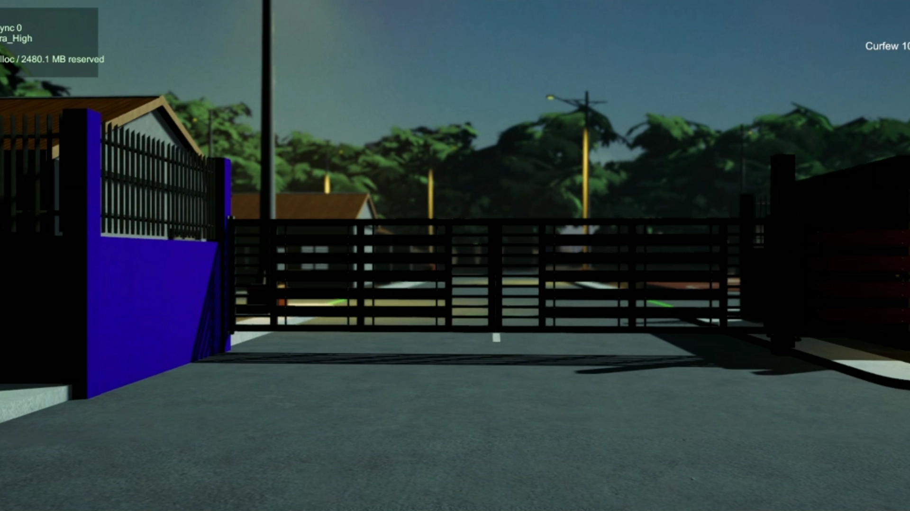
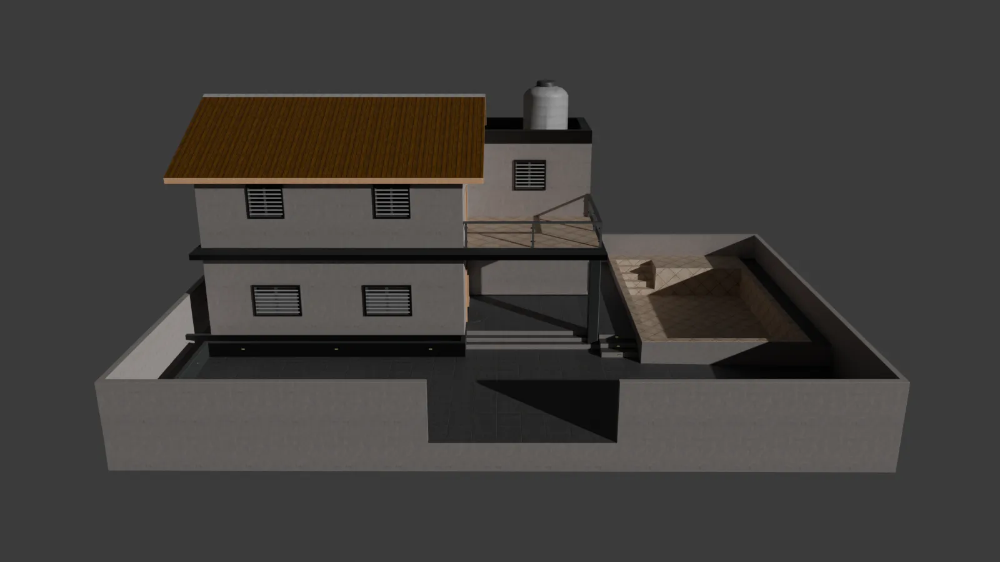

Unity horror game · In development
BantayGabi
A Filipino first-person horror project where I contribute 3D assets, textures, environments, shaders, graphics configuration, integration, performance testing, build preparation, and technical troubleshooting.
Game preview
Explore the world of BantayGabi
These development captures introduce the nighttime neighborhood, its visual direction, and the environment assets I help create and integrate.

Environment capture
Subdivision entrance
The main gate frames the entrance to the residential neighborhood.
Showing Subdivision entrance, image 1 of 8.

Dedicated 3D library
Explore the environment assets behind BantayGabi
Rotate five selected environment assets, compare their rendered views, and see how the models were prepared for Unity and the browser.
Highlighted technical terms include an optional plain-language explanation.
Open 3D model libraryMy contribution
Art and implementation working together
My work connects visual asset production with the practical work needed to make those assets behave inside a real Unity project. That includes preparing models, building materials and shaders, checking graphics settings, integrating assets, testing builds, and investigating visual or performance problems.
- 3D modeling, texture preparation, and environment assets
- Unity material, ShaderLab, vertex-color, and workflows
- Graphics configuration, build preparation, and performance checks
- Asset integration, testing, troubleshooting, and team support
Continue exploring
See the server administration case study
Explore three documented Minecraft environments covering configuration, compatibility, performance, Discord integration, and troubleshooting.
View Minecraft case study